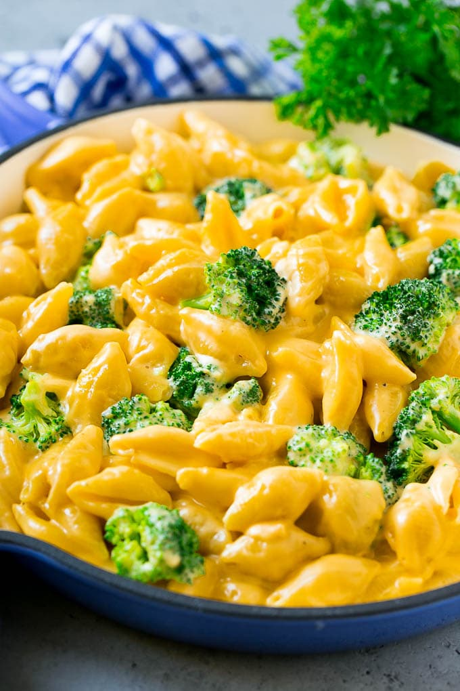

Mac and Cheese with Broccoli

Description
Mac and Cheese with Broccoli
Ingredients
- 1 package mac and cheese
- 1 head of broccoli
- 1 tablespoon of butter
- 1/2 cup of milk
Steps
- Bring a pot of water to a boil. Cook macaroni in the boiling water for 8-10 minutes.
- Meanwhile cut broccoli into desired size.
- Steam broccoli in a pan until softened as desired.
- When macaroni is cooked, drain water and return to pan adding butter and milk. Then slowly stir in cheese packet until evenly coated
- Once broccoli is cooked tranfer to macaroni pan and stir until lightly mixed.